Defines the cPouta network lookup, security group and rules, network port, VM, key pair, and floating IP.
variables.tf
Declares the typed inputs and validates the SSH source CIDR.
terraform.tfvars.example and terraform.tfvars
The example shows required settings; the local tfvars file supplies this deployment's values and is ignored by Git.
versions.tf and .terraform.lock.hcl
Set the required OpenTofu/provider versions and lock the selected provider version. The OpenStack provider reads credentials from local clouds.yaml, which must not be committed.
cloud-init.yaml
Runs at the VM's first boot, installs Apache, and currently writes a simple homepage using the student name and page message variables.
outputs.tf
Prints the VM's floating IP and browser-ready HTTP URL after apply.
Resources and connections
data.openstack_networking_network_v2.project looks up the existing project network; it is a data source, not a resource created by this configuration.
openstack_compute_keypair_v2.web registers the public SSH key. The VM refers to this key pair.
openstack_networking_secgroup_v2.web creates the firewall. Its SSH, HTTP, and HTTPS rule resources each refer to the security group's ID.
openstack_networking_port_v2.web connects the VM to the looked-up project network and attaches the security group.
openstack_compute_instance_v2.web uses the configured image and flavor, the key pair, and the network port. It also receives cloud-init.yaml as user data.
openstack_networking_floatingip_v2.web allocates a public IP and attaches it to the network port; the outputs read its address.
These references form OpenTofu's dependency graph: the VM and floating IP use the port; the port and firewall rules use the security group; the VM also uses the key pair. The initial plan had seven resources; the HTTPS rule was added later, so the current configuration defines eight.
Answers to Questions 2–5
Answer 2
Declarative automation describes the desired end state, and the tool determines which actions are needed to reach it. Imperative automation specifies the steps to run in order. An operation is idempotent when repeating it with the same inputs leaves the system in the same intended state. This matters because a deployment can be safely rerun to correct or confirm the result without duplicating resources.
Answer 3
OpenTofu was created as a community fork after HashiCorp changed Terraform's license from the Mozilla Public License to the Business Source License in 2023. OpenTofu remains open source under the MPL and is developed as a community project. Both tools use HCL and share much of the Terraform provider ecosystem, but their roadmaps and some features can differ. For an individual, the choice may have little effect if the needed providers and workflows are supported; for a company, licensing, governance, support, and long-term compatibility can make the choice important.
Answer 4
The state file records how resources in the configuration correspond to real infrastructure, including resource IDs and attributes OpenTofu needs when it plans changes. It should not be committed to Git because it can contain sensitive values and because concurrent edits can corrupt or conflict with the state. Teams commonly store state in a secured remote backend with access controls, encryption, locking, and backups.
Answer 5
Configuration drift is a difference between the infrastructure OpenTofu expects and the real infrastructure. It can happen when someone makes a manual change in the cloud console or another process changes a managed resource outside OpenTofu. During a plan, OpenTofu refreshes information about managed resources from the provider and compares it with the configuration and state, then reports actions needed to reconcile detected differences.
Initial deployment evidence
The first plan created seven resources. The existing project network was looked up as a data source; it was not created by this configuration.
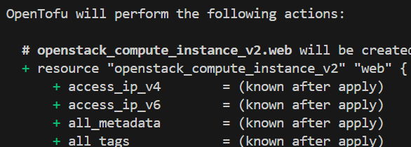
Initial plan: compute instance.
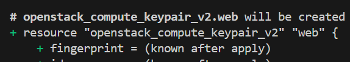
Initial plan: key pair.
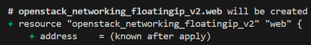
Initial plan: floating IP.
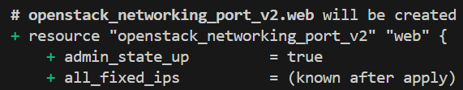
Initial plan: network port.
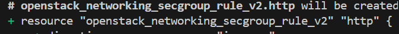
Initial plan: HTTP rule.
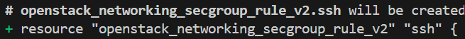
Initial plan: SSH rule.
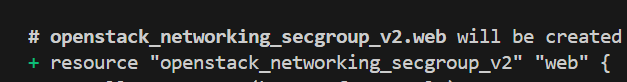
Initial plan: security group.
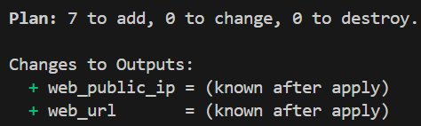
Initial plan summary: 7 to add, 0 to change, 0 to destroy.
Initial apply
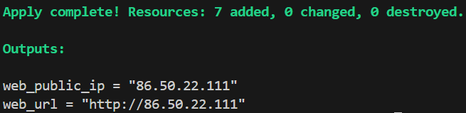
Apply completed successfully and printed the web server outputs.Browser opened at the server's HTTP floating IP.
Experiment 1 — Change
Option A — change the page text: Change page_message in terraform.tfvars.
My Prediction(s)
Will the VM be updated in place, or destroyed and re-created? Why?.
I think it will just update in place. there is no destory command issued, just a small change.
Will the public IP address change after apply?
I don't think it will.
Documentation
Which attribute in the plan caused the result you saw? Find the line in the plan output that says so.
The plan marks the user_data change with # forces replacement. The summary says 1 to add, 0 to change, 1 to destroy, and the VM is shown with -/+, so OpenTofu will replace it. So my initial prediction of no destruction, was incorrect.
Why can't that attribute simply be changed on a running VM? (Think about when cloud-init runs.) user_data is provided when the VM is created. Cloud-init reads it during the VM's first boot, so changing it does not rerun cloud-init on an existing VM. Replacing the VM lets it boot with the new page message.
Why did the IP address behave the way it did? Which resource is the floating IP actually attached to?
The plan does not replace the network port or floating-IP resource, so the public IP should remain the same. In main.tf, the floating IP's port_id references openstack_networking_port_v2.web; it is attached to the port, not directly to the VM.
Plan
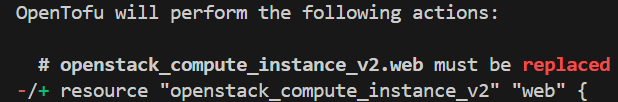
The compute instance must be replaced.
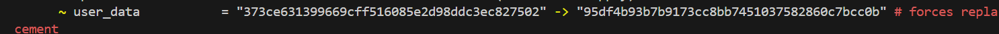
The user_data change forces replacement.
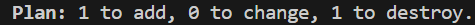
Plan summary: 1 to add, 0 to change, 1 to destroy.
Result
The page displays the new message after apply.
Option B — allow HTTPS too: Change the code so that the security group also allows HTTPS (TCP 443) from anywhere.
My Prediction(s)
How many resources will be added, changed and destroyed?
There will be 1 addition.
Is the VM affected?
Yes it is.
Documentation
How does the result differ from Option A, and why?
Unlike Option A, this change adds one security-group rule for inbound TCP port 443; it does not change or replace the VM so, I was wrong about the VM being affected. The HTTPS rule is a separate resource, while Option A changed user_data, which forces the VM to be replaced.
Does the page now work over https://? Why or why not?
No. Opening port 443 in the security group only allows the network traffic through. Apache is still configured to serve the page over HTTP and has no HTTPS/TLS listener or certificate, so the browser cannot establish an HTTPS connection.
Plan
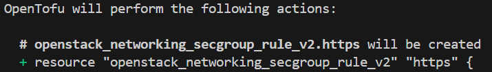
The TCP 443 security-group rule will be created.
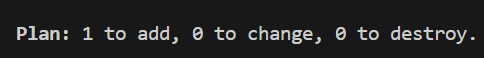
Plan summary: 1 to add, 0 to change, 0 to destroy.
Result
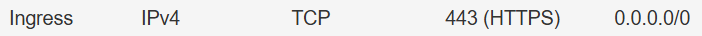
The security group permits ingress TCP 443 from 0.0.0.0/0. This alone does not configure HTTPS in Apache.
Experiment 2 — Drift
Part 1 — a deleted rule
In the web interface, go to Network → Security Groups → week7-web-sg → Manage Rules and delete the HTTP (port 80) rule.
Reload your page in a private or incognito window. It should stop loading.
My Prediction(s)
What will tofu plan show now? Will it notice the missing rule at all?
It will show that there is a resource to add. I think it will notice.
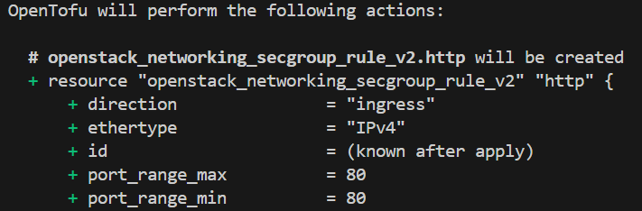
Plan detects the deleted, configuration-managed HTTP rule.
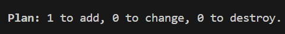
Plan summary for the missing rule.
Part 2 — an added rule
In the web interface, add a rule by hand to the same security group.
My Prediction(s)
Will tofu plan notice this rule and propose to remove it?
It most likely will not notice, as all it is looking for are if the recourses from main are missing.
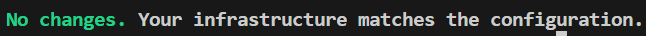
The plan reports no changes for the manually added rule.
Documentation
Why did OpenTofu react differently to the deleted rule and to the added rule? Think about what OpenTofu keeps track of in its state file
The deleted HTTP rule was declared in the configuration and recorded in OpenTofu's state. During refresh, OpenTofu found that the real rule was missing, so it planned to create it again. The rule I added manually was not declared in the configuration or recorded in state, so OpenTofu did not treat it as a resource it needed to remove.
What does this tell you about making manual changes in an environment that is managed with IaC?
Changes to resources managed by IaC should be made in the configuration and applied through OpenTofu. Manual changes can create drift; extra resources that are not managed may be left behind because OpenTofu does not necessarily know they should be removed.
Experiment 3 — Destroy and Re-create
My Prediction(s)
How many resources will tofu destroy remove? Will it touch the project network?
I thik maybe 3-4 resources will be removed. It will not touch the network
In which order will the resources be destroyed? Use the references in main.tf to reason about it.
it will be the network ports then the vm.
After re-creating, will the public IP be the same as before?
Im fairly confident it will be.
Documentation
Compare the actual destroy order with your prediction. What determined it?
My prediction that the port would be destroyed before the VM was incorrect. OpenTofu began destroying the floating IP, security-group rules, and VM in parallel. After the VM finished, it destroyed the key pair and port; the security group was destroyed last. The order came from the dependency graph: dependent resources must be removed before the resources they rely on, while independent resources can be destroyed in parallel.
why did the project network survive the destroy?
The project network is declared as a data source, not a resource managed by this configuration. OpenTofu looks it up so the VM can use it, but it does not own or destroy that existing cPouta network.
Why does a changing IP address matter less when you have an output for it — and what would you need if the address had to stay the same?
The web_public_ip and web_url outputs show the current address after each apply, so I can find the server even if its address changes. The floating IP is allocated dynamically from the public pool, so destroying and recreating it does not guarantee the same address. To keep a stable address, I would need to reserve a specific floating IP and preserve that allocation instead of destroying it.
How long did the rebuild take compared to your manual setup in Week 1?
It was much faster overall.
Destroy and re-apply evidence
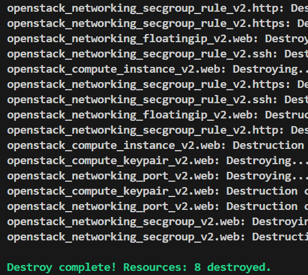
Destroy completed; the configuration-managed resources were removed.Re-apply recreated the resources and printed the new outputs.The re-created server was opened at its new HTTP floating IP.
Reflection
Building the VM by hand helped me understand the individual setup steps, but rebuilding it with OpenTofu was much faster. Keeping the network, security rules, VM, and outputs in code makes the deployment repeatable and easier to review. The experiments also showed that changes such as updating cloud-init user data can replace a VM, while manual changes to managed resources create drift. I would use manual setup for learning or one-off troubleshooting, and OpenTofu when I need a consistent deployment I can recreate.
Problems encountered
Google was trolling me again by auto updating the http to https when I was attempting to view my live site.